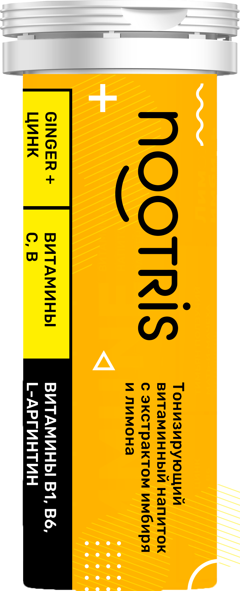

Елена Малышева: "Взрослые и дети перестают болеть гриппом и ОРВИ! Поразительное открытие российских ученых".
Здравствуйте, дорогие мои!
Уже много лет я ежедневно появляюсь на экранах ваших телевизоров и не раз мы говорили о таких заболеваниях как ОРВИ и гриппом. Было много сказано о методах лечения уже в разгар болезни!
В основном - прием антибиотиков для снижения температуры, различных сиропов от кашля, прогревание бронхов и лечение ангины. А медикаментозное лечение зачастую очень пагубно влияет на организм взрослого, а тем более ребенка.
Мы в нашей передаче, часто говорим о безопасных методах лечения, щадящих хрупкий организм наших деток, но очень редко затрагиваем способы профилактики натуральными и полезными средствами, которые принято считать народными. Причем, не просто рецепты от бабушек, а то, что признали в научной среде, ну и, конечно же, признанное нашими телезрителями.
Сегодня мы поговорим о воздействии иммунитета на болезнетворные вирусы и микробы в организме.
Наверняка Вы сейчас в недоумении, неужели ОРВИ и простуду можно вылечить без лекарств и таблеток?
Если Вы помните, то несколько выпусков назад я рассказывала о целительных свойствах прополиса, кедра, масла расторопши, облепихового масла и кедровой живицы? Их одновременное лечебное воздействие, это научно доказанный факт! Эти вещества возрождают иммунитет и создают враждебную среду для болезнетворных бактерий, микробов и вирусов. В отличие от искусственно созданных препаратов с добавлением химии, вирусы и микробы не могут выработать иммунитет к природным веществам.
Ни для кого не секрет, что вирусы распространяются с молниеносной скоростью в людных местах, особенно в детском коллективе. Один малыш принесет вирус - и уже через несколько дней на больничный идет четверть группы детского сада. Именно здесь нам так необходимо эффективное средство профилактики и защиты наших детей и себя от инфекции.
Об препарате для иммунитета NOOTRIS очень много говорят и по нашему каналу и по другим. И не зря, скажу я Вам! Это не какое-нибудь обычное лекарство, а композиция из уникального синтеза густых, жидких субстанций и прополиса, которая мягко способствует повышению активности иммунных клеток, не нарушая биохимические реакции организма. прополисный препарат NOOTRIS доказал свою эффективность не только потребителям, но и науке, которая признала его действенным препаратом.
Благодаря своему уникальному, а главное на 100% натуральному составу, препарат NOOTRIS отлично укрепляет иммунитет и защищает организм от вирусов.
Главный компонент препарата NOOTRIS - это прополис. Он мгновенно уничтожает чужеродные вирусы и бактерии, позволяя ускорить процесс выздоровления в несколько раз. Интересно, что до того, как были изобретены антибиотики, люди лечились именно прополисом. Это, так сказать, природный антибиотик, который не приносит организму никакого вреда! Ведь, как известно, синтетическими лекарствами мы одно лечим, а все другое калечим.

Мы пригласили в студию Ирину Крылову, одну из тысяч молодых мамочек, которые защищают своих малышей и себя с помощью прополисного препарата NOOTRIS.
Ирина Крылова: “С самых первых дней я почувствовала результат. Моя дочка стала хорошо спать и лучше кушать! Каждый вечер перед сном я даю препарат моей малышке. Немного опасалась аллергии, дочка очень чувствительна. Но вкус ей настолько понравился, что однажды она взяла и сама попросила налить препарат! По её лицу я поняла, что ей понравилось. Всю зиму я давала препарат для профилактики, когда мы ходили в садик. Если раньше мы раз в месяц сидели на больничном, то с момента начала использования препарата, у нас нету даже соплей. Вот уже 7 месяцев!!! Я благодарна судьбе за такой подарок. Всегда раньше очень переживала, когда приходилось лечить малышку таблетками и разной химией, от которой больше вреда, чем пользы. А теперь мы сохраняем наше здоровье, семейный бюджет, и уже забыли о вызовах врача и поликлинике”.
Елена Малышева: "Ирина, расскажите подробнее о процессе профилактики!"
Ирина Крылова: "Заказала прополисный препарат NOOTRIS на официальном сайте производителя. Чтобы его получить, заполните свои данные на сайте, оставьте рабочий номер телефона, чтобы с Вами смогли связаться и обговорить детали. Я получила шипучие таблетки через 4 дня, его привез курьер прямо мне домой! Рассчиталась после проверки товара. Средство стоит копейки, относительно той цены, которую я тратила каждый месяц на лечение дочки и потратила бы еще больше, если бы не заказала шипучки! Уже после первого дня применения чувствуется заметный результат. Попробуйте сами, и Вы поймете меня."
Елена Малышева: "Спасибо Ирина, наши операторы разместят ссылку на сайт производителя
препарата для иммунитета NOOTRIS, чтобы другие наши читатели, у которых болеют дети,
могли оформить заказ."
Как видите, путь к здоровью не такой трудный. NOOTRIS вы можете заказать здесь. Это официальный
сайт производителя.
Оригинальный продукт можно заказать только на официальном сайте производителя, который опубликован ниже. Этот продукт имеет все необходимые сертификаты и проверен на эффективность. В России очень много низкокачественных иммуномодуляторов, заказав которые Вы не получите эффект.